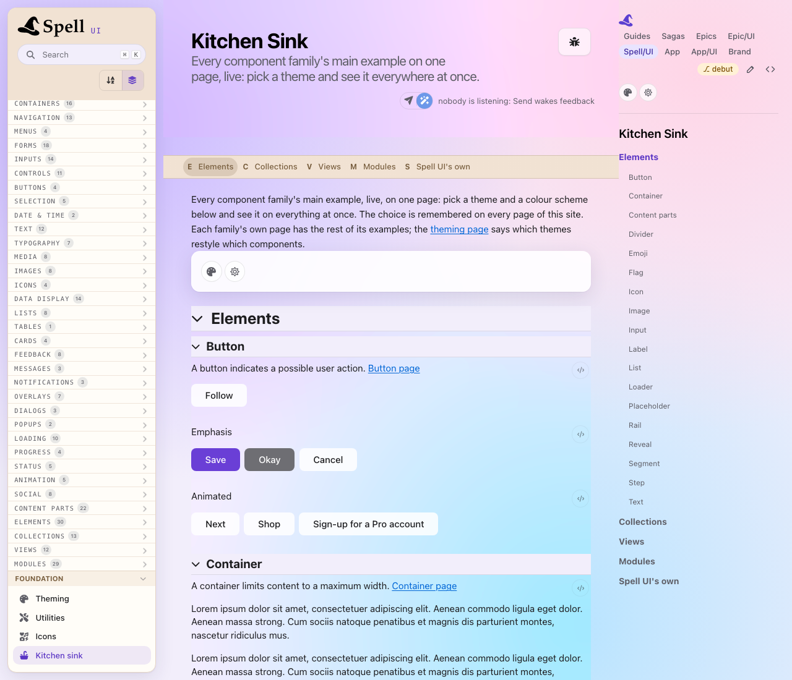

In a browser, open
the kitchen sink, press the palette button at its top, and pick Fruity. Then flip the sun / moon button for dark.
A soft lavender, pink and sky wallpaper behind the page; frosted, translucent cards and menus; a violet Save button;
in dark, plum and navy washes and a lilac button.

Say what looks off: a surface, a colour, the contrast.